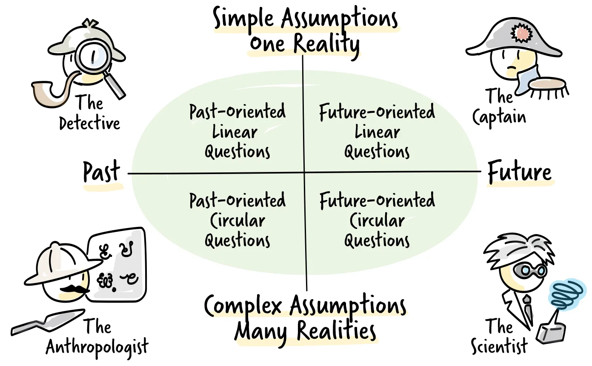

What makes a question powerful
A powerful question is not an everyday question that we answer from a script ("How are you?" "Fine, thanks!"). It makes us stop and think, and consider answers we would not otherwise have given.
Powerful questions show engagement with the subject, provoke creative thinking and open up conversation. As a coaching tool, they reflect the coach's engagement with and understanding of the coachee's perspective, and they prompt the coachee to reflect on their own views and patterns. A powerful question moves everyone in the conversation towards clarity, re-evaluation and new solutions.
Characteristics of a powerful question
A powerful question broadens perspective and allows possibilities to be explored and insights to be generated. It also confirms a relationship of understanding and active listening between the person asking and the person answering.
The goals of powerful questions focus on the person receiving them: to open a dialogue, to prompt reflection and insight, to challenge assumptions, and to move towards action.
A powerful question is the starting point of a conversation whose purpose should be clear beforehand. A conversation with several purposes is diluted and less productive, so a powerful question must fit the purpose of the conversation first of all. It tends to have some or all of these characteristics: it is a short, precise, single question; it is open and does not look for a "yes" or "no"; it contains no assumptions; and it does not imply that a particular answer is correct.
Karl Tomm's model

Many approaches exist for creating powerful questions. The Canadian psychiatrist Karl Tomm developed a model of interventive questions that is a useful guide. Rooted in systemic theory, it assumes that perspectives differ widely in any situation. It helps to discover an individual's or a team's perspective by asking questions along two dimensions: time (past or future) and understanding (linear, one reality, or circular, many realities).
Powerful questions can come from all four quadrants. Questions along the time axis look at past situations and at the future. It is like driving a car: most of the time you look ahead through the windscreen, but now and then you check the mirror to see what is behind you.
Linear past-oriented questions work like a detective, building a timeline and an overview of what happened: "What happened when you shared that feedback?", "What triggered that event?", "Was it the customer or someone inside the company?"
Circular past-oriented questions work like an anthropologist, seeking to understand intentions and motivations: "From which point of view could their action make sense?", "Could it be that they knew something the rest of you did not? What could it be?", "Do you think they saw this as a problem at all?"
Circular future-oriented questions work like a scientist, forming hypotheses and exploring scenarios: "What could you do to make things better?", "Is there something you could do to prevent this in the future?", "Can you see a possible solution?" They also include "miracle questions" that explore an alternative to the current situation: "If you come to work tomorrow and the problem has disappeared, how would you notice?" or "When you look back on this period one day, which decisions made the difference?" Future-oriented circular questions can feel speculative or uncomfortable, but they help people step away from the constraints of the current situation, see new paths and notice the first steps that may already be in place.
Linear future-oriented questions work like a captain, defining the next steps: "What is the first thing you are going to do now?", "Who do you need to talk to in order to move this forward?", "How can they help you?", "How will I know that you have achieved this?"
Most conversations use questions from all four quadrants. The order depends on the flow of the conversation and the coach's intuition, although moving from detective to anthropologist to scientist to captain is a useful default.
When to ask powerful questions
Powerful questions can be thought-provoking and even a call to action, but they also convey understanding without judgement. The aim is to spark creative thinking and new ideas. Sometimes that means challenging existing perceptions and, through new insight, changing direction.
Consider the purpose of the conversation first and design your questions around it. A conversation with an individual or a team can serve many goals: understanding the details of an issue, exploring different perspectives, solving a problem or generating ideas. For focus and clarity, limit each conversation to one purpose, and take other purposes to separate conversations with their own opening questions.
Practice
Creating powerful questions. Imagine a team meeting in which you want the team to reflect on how they work together. Write down questions that could inspire creative thinking, then check them against the characteristics above. How many do they meet? How could you improve the others?
Using the model. In your next conversation about a problem, work through the model deliberately. First ask detective questions to understand the situation, then anthropologist questions to understand possible causes, then scientist questions to explore possible solutions, and finally captain questions to agree concrete actions. The following examples show the kind of questions that belong in each quadrant.
| Role | Sample questions |
|---|---|
| DetectiveLinear, past |
|
| AnthropologistCircular, past |
|
| ScientistCircular, future |
|
| CaptainLinear, future |
|
Coaching dojo. Practise in a coaching dojo, with the observers listening for powerful questions, the keywords that triggered them, and other questions that could have been asked.
Further reading
- Tomm, K.: "Interventive Interviewing, Part III: Intending to Ask Lineal, Circular, Strategic, or Reflexive Questions?" Family Process, 1988. The original description of the model.
- Kimsey-House, H., Kimsey-House, K., Sandahl, P. and Whitworth, L.: Co-Active Coaching. Includes an extensive list of powerful questions grouped by intention.